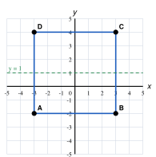
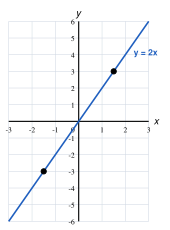
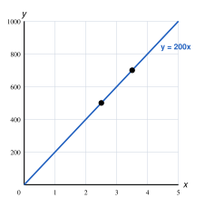
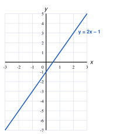
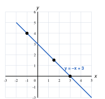
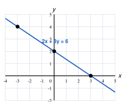

y = x + 1
| x | −1 | 0 | 1 | 2 | 3 |
|---|---|---|---|---|---|
| y | 0 | 1 | 2 | 3 | 4 |
y = −2x + 4
| x | −1 | 0 | 1 | 2 | 3 |
|---|---|---|---|---|---|
| y | 6 | 4 | 2 | 0 | −2 |
(iii) y = x + 1: m = 1, c = 1. y = −2x + 4: m = −2, c = 4
(iv) Point of intersection = (1, 2)
(v) x = 1

(i), (ii) Side AB = 6 units, so C = (3, 4) and D = (−3, 4).
(iii) AB: y = −2 BC: x = 3 CD: y = 4 DA: x = −3
(iv) Axes of symmetry: x = 0 (the y-axis) and y = 1.

| x | −2 | −1 | 0 | 1 | 2 |
|---|---|---|---|---|---|
| y | −4 | −2 | 0 | 2 | 4 |
(iii) When x = 1.5, y = 3
(iv) When y = −3, x = −1.5
(v) No. When x = −1, y = 2 × (−1) = −2, not 2.

(i) y = 200x
| x (kg) | 1 | 2 | 3 | 4 |
|---|---|---|---|---|
| y (Rs) | 200 | 400 | 600 | 800 |
(iv) Price of 2.5 kg = Rs 500
(v) Rs 700 buys 3.5 kg

| x | −2 | −1 | 0 | 1 | 2 |
|---|---|---|---|---|---|
| y | −5 | −3 | −1 | 1 | 3 |
(iii) Gradient m = 2, intercept c = −1
(iv) k = 2(4) − 1 = 7
(v) Same gradient 2, intercept 2: y = 2x + 2

| x | −2 | −1 | 0 | 1 | 2 | 3 | 4 |
|---|---|---|---|---|---|---|---|
| y | 5 | 4 | 3 | 2 | 1 | 0 | −1 |
(iii) Intercept = 3; meets the x-axis at (3, 0)
(iv) When x = 1.5, y = 1.5; when y = 4, x = −1
(v) Obtuse, because the gradient (−1) is negative.

(i) (d) 2y = 4x + 6 → y = 2x + 3 (e) y + 3x = 1 → y = −3x + 1
| Line | (a) | (b) | (c) | (d) | (e) | (f) |
|---|---|---|---|---|---|---|
| Gradient m | 3 | −2 | ½ | 2 | −3 | 3 |
| Line | (a) | (b) | (c) | (d) | (e) | (f) |
|---|---|---|---|---|---|---|
| Intercept c | 2 | 5 | −4 | 3 | 1 | −1 |
(iii) Acute (m positive): (a), (c), (d), (f) Obtuse (m negative): (b), (e)
(iv) (a) and (f) are parallel, because both have the same gradient, 3.
(i) y = 3x − 2
(ii) y = −x + 4
(iii) Gradient 2 (parallel), c = −3 → y = 2x − 3
(iv) c = 0; m = 6 ÷ 2 = 3 → y = 3x
(v) c = 1; m = (5 − 1) ÷ (2 − 0) = 2 → y = 2x + 1
(i) 3y = −2x + 6 → y = −(2/3)x + 2
(ii) Gradient = −2/3, intercept = 2
(iii) When x = 0, y = 2 → (0, 2). When y = 0, 2x = 6, x = 3 → (3, 0)
(v) 2(−3) + 3(4) = −6 + 12 = 6, which equals the right-hand side, so (−3, 4) lies on the line.

y = x + 1
| x | −1 | 0 | 1 | 2 | 3 |
|---|---|---|---|---|---|
| y | 0 | 1 | 2 | 3 | 4 |
y = −2x + 4
| x | −1 | 0 | 1 | 2 | 3 |
|---|---|---|---|---|---|
| y | 6 | 4 | 2 | 0 | −2 |
(iii) y = x + 1: m = 1, c = 1. y = −2x + 4: m = −2, c = 4
(iv) Point of intersection = (1, 2)
(v) x = 1